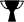
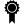
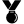

TES
COmmunity Health
Community Health Leaders
My Health
Tesco Projects in my Community
{{ region_type|capitalize}} Leaderboard

{{ leaderboard_items[0].name }}

{{ leaderboard_items[1].name }}

{{ leaderboard_items[2].name }}
{% for item in leaderboard_items[3:] %}
{{ item.name }}
{% endfor %}
Map